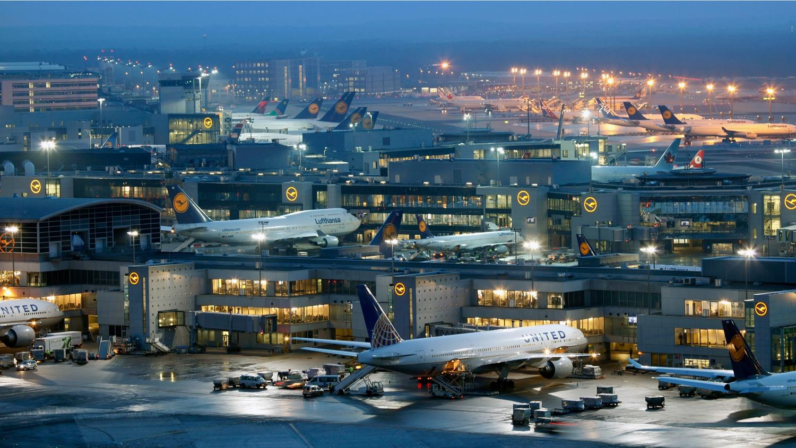
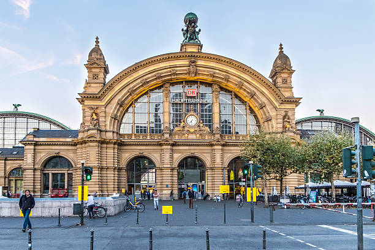
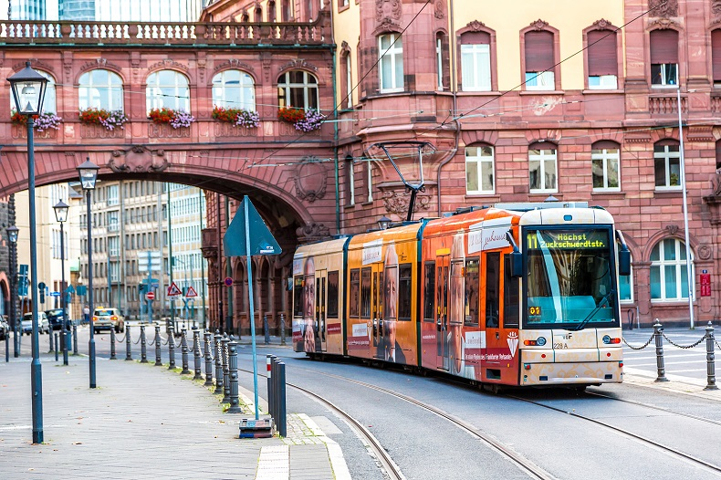

Flughafen
Der Flughafen Frankfurt Main ist der größte deutsche Verkehrsflughafen. Mit über 2 Millionen Tonnen hat der Frankfurter Flughafen das größte Frachtaufkommen aller europäischen Flughäfen und liegt im weltweiten Vergleich auf dem 13. Rang. Der Flughafen ist die Heimatbasis und das Hauptdrehkreuz der Fluggesellschaften Lufthansa und Condor Flugdienst sowie der Frachtfluggesellschaft Lufthansa Cargo. Der Flughafen Frankfurt hat zurzeit zwei große Terminals mit insgesamt fünf Hallen, ein Terminal für Privatflugzeuge sowie ein kleines Terminal für besondere Vielflieger und First-Class-Passagiere der Lufthansa. Das dritte große Passagierterminal wird aktuell im Süden des Flughafens realisiert. Terminal 3 wurde von 2019 bis 2022 errichtet. Es verfügt über 13 Gates, 22 Check-In-Schaltern. Jährlich können dort bis zu bis zu fünf Millionen Gäste abgefertigt werden. Mit Stand 2022 ist ausschließlich die Anreise über die Straße, die Bundesautobahn 5, möglich. Eine Anbindung von zur Bahnstrecke Mannheim–Frankfurt am Main ist vorgesehen. Die Eröffnung des Terminals ist im Jahr 2026 geplant. Fraport weist in einer Studie darauf hin, dass 2012 der Flughafen neben 78.000 direkten Arbeitsplätzen weitere 38.000 in der Region gesichert habe. Gegenüber 2000 sei das ein Anstieg um 25 %, gegenüber 1980 um fast 150 %. Der frankfurter Flughafen bietet seinen Passagieren eine breite Auswahl an Urlaubszielen aus Europa und der ganzen Welt.
| Betriebs-jahr | Fluggast-aufkommen | Luftfracht |
|---|---|---|
| 2021 | 15.801.339 | 1.694.778 |
| 2020 | 18.770.998 | 1.895.074 |
| 2019 | 70.560.987 | 2.041.775 |
| 2017 | 64.505.151 | 2.143.622 |
| 2015 | 61.032.022 | 2.076.734 |
| 2010 | 53.013.771 | 2.231.348 |
| 2000 | 49.369.429 | 1.589.428 |
| 1990 | 29.631.427 | 1.176.055 |
| 1980 | 17.664.171 | 642.850 |
| 1970 | 9.401.842 | 327.323 |
| 1960 | 2.172.494 | 46.910 |
| 1950 | 195.330 | 3.652 |
Hauptbahnhof
Frankfurt (Main) Hauptbahnhof ist der größte Bahnhof in Frankfurt am Main. Mit täglich etwa 493.000 Reisenden ist er nach dem Hamburger Hauptbahnhof der am zweitstärksten frequentierte Fernbahnhof in Deutschland. Der 1888 als „Centralbahnhof Frankfurt“ eröffnete Kopfbahnhof gehört zu den 21 Bahnhöfen der höchsten Preisklasse von DB Station&Service und zählt zur 2018 von DB Netz eingeführten Kategorie der Metropolbahnhöfe. Aufgrund seiner zentralen Lage bezeichnet ihn die Deutsche Bahn AG als wichtigste Verkehrsdrehscheibe im deutschen Zugverkehr. An Spitzentagen passieren circa 1170 Züge den Kopfbahnhof. Mit insgesamt 493.000 Reisenden und Besuchern pro Tag war er 2019 der Bahnhof mit dem zweitgrößten Aufkommen in Deutschland. Neben dem Hauptbahnhof hat Frankfurt mit dem Südbahnhof, dem Westbahnhof und dem Flughafen-Fernbahnhof drei weitere Fernbahnhöfe. Unter dem Bahnhofsgebäude befinden sich ein viergleisiger S-Bahnhof und ein U-Bahnhof, mit denen der Anschluss an das innerstädtische und regionale Schnellbahnnetz hergestellt ist. Eine direkte Verbindung zu verschiedenen Orten in Italien, Frankreich, Schweiz, Österreich, Belgien und den Niederlanden, und vielen mehr ist von hier aus möglich. Leider ist der Hauptbahnhof zur gleichen Zeit ein Hotspot für Kriminalität. 2019 verzeichnete die Bundespolizei am Frankfurter Hauptbahnhof 4787 Delikte, mehr als an jedem anderen deutschen Bahnhof.
U-Bahn Netz
Die U-Bahn Frankfurt ist das Stadtbahnsystem der Stadt Frankfurt am Main und nach der S-Bahn Rhein-Main und vor der Straßenbahn Frankfurt am Main wichtigster Verkehrsträger des öffentlichen Personennahverkehrs in der Stadtregion Frankfurt. Die U-Bahn wird täglich von fast 400.000 Fahrgästen benutzt. Das Netz wurde seit 1968 in mehreren Stufen in Betrieb genommen. Es besteht aus drei Stammstrecken mit innerstädtischen U-Bahn-Tunneln und oberirdischen Strecken in den Außenbereichen. Die oberirdischen Abschnitte haben unterschiedliche Ausbaustandards vom unabhängigen bis zum straßenbündigen Bahnkörper. Die Frankfurter U-Bahn hat neun Linien, davon acht Linien in der Innenstadt, mit zusammen 27 Tunnelbahnhöfen und 59 oberirdischen Stationen. Auf dem 65 Kilometer langen Streckennetz wurden im Jahr 2016 über 132 Millionen Passagiere befördert. Zuletzt kamen am 12. Dezember 2010 mit der U8 und der U9 zwei neue Linien hinzu, die den Universitätscampus und das Neubaugebiet am Riedberg erschließen. Die U-Bahn-Linie U9 ist die erste Linie, die nicht die Innenstadt berührt.
| Betriebs-jahr | U-Bahn-Fahrgäste | Straßenbahn-Fahrgäste |
|---|---|---|
| 2018 | 143,2 | 66,6 |
| 2017 | 134,7 | 62,8 |
| 2015 | 127,4 | 59,4 |
| 2010 | 115,8 | 49,8 |
| 2000 | 94,3 | 48,1 |